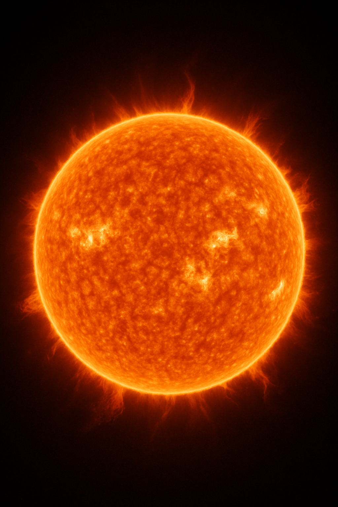

As estrelas são corpos celestes formados por gases, principalmente hidrogénio e hélio, que emitem luz e calor devido às reações de fusão nuclear que ocorrem no seu interior. São os elementos fundamentais das galáxias e desempenham um papel crucial na evolução do universo. As estrelas variam em tamanho, cor e temperatura, e o nosso Sol é um exemplo de uma estrela de tamanho médio.
Ao longo da sua vida, uma estrela pode passar por várias fases, desde o seu nascimento numa nebulosa até ao seu fim como anã branca, estrela de neutrões ou buraco negro. A observação das estrelas tem fascinado a humanidade desde os tempos antigos, contribuindo significativamente para o desenvolvimento da astronomia.
Sol |
|
|  |
|